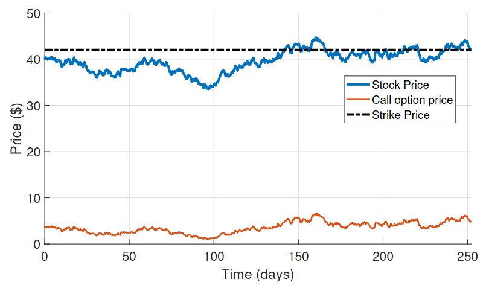

Stock Returns Volatility Estimation with Unscented Kalman Filter
Introduction
The volatility of financial returns is an important element in risk and portfolio management, in the development of investment strategies and in the making of monetary policy. While the variance of returns represents the dispersion around the average return of the asset, volatility is a measure of this variance limited by a period of time. Thus, volatility modeling and analysis are important topics to be studied by the financial market.
This study presents the results of the estimation of the instantaneous annual volatility of stock price returns — computationally simulated — with partial observations in the form of option prices, based on a nonlinear stochastic filter, the Kalman Unscented Filter (UKF)[1].
Stochastic Filtering
Filtering techniques, which are widely used in Signal Processing and Control Engineering, are methods of obtaining relevant information from noiseful data, where noise is a unwanted variation related to the original signal. Stochastic filtering is used to reduce noise in stochastic processes, when trying to estimate the state of a certain dynamic system, attenuating the effect of random noise in order to approximate the expected behavior of the system. The filtering problem is to quantify the relevance of the available data, usually coming from noisy sensor measurements, so they can be used to describe the phenomenon of interest.
In general, stochastic filtering is an iterative process in which it is desired to estimate a certain quantity or a signal and the model parameters are imprecise and the observations show measurement noise or cannot be directly measured and the model parameters may depend on unobservable or observable data. For applications in finance and economics, we usually have a time series of observations that might be stock prices, interest rates, future contract prices, and others. The unobservable time series might be financial volatility, convenience rates, price at risk and other financial indicators, for minimizing risk under partial observations.
According to Bhar in Stochastic filtering with applications in finance[2], some authors identify three main application areas for stochastic filtering in quantitative finance. The first one is about estimating the volatility of any financial asset. The second one is about processes with or without jumps applied to commodities and interest rates. The third one is about hedging strategies for minimizing risk under partial observation. There are many other interesting areas, mostly in macroeconomic problems.
The objective of stochastic filtering is to estimate the states that model a dynamical system driven by stochastic processes. An example in finance would be that we can observe stock prices, but we cannot directly assess the stochastic parameters that contribute to the price dynamics. Applying the concepts of stochastic filtering allow us to estimate the states of such systems, based on the parameters that were chosen to model them.
The basic idea for a stochastic filter is to combine unobservable states and a measurement equation that relates the observed data to the hidden states, through transition equations on an algorithm. Thus, predicting the a priori hidden state using all the information available at the present time and then combine it with new observations to make a more accurate a posteriori state estimate.
The traditional stochastic filter is the Kalman Filter[3], which is optimal for linear systems with additive Gaussian noise. Some variations of the Kalman Filter were developed to deal with nonlinear systems, such as the Extended Kalman Filter (EKF) — based on a first order linearization on the nonlinear system equation — and the Unscented Kalman Filter — which does not require linearizations and for highly nonlinear systems has a greater accuracy than the EKF.
For the problem addressed in this study, the nonlinearity is on the measurement equation, where I used the Black Scholes model as an observer for the volatility, in the form of a call option price. The section describes the proper financial concepts behind this study and the system modeling.
Volatility estimation using Black Scholes model
In order to properly use the Black-Scholes model to determine option prices, an important aspect is the stock returns volatility. An option is a financial contract that gives the right to buy, call, or sell, put, an asset for a certain price, called strike price, on a certain date, called expiration or maturity date.
American options can be exercised at any time up to and including their maturity date, while European options can only be exercised at the maturity date. In Brazil, the most common practice is to use the American option for call options and the European option for put options. A call option allows the holder to purchase an asset on a specific date in the future for a previously determined price. However, for this study, I considered a European call option.
In the early 1970's, Black and Scholes developed a widely used model to define option prices over financial instruments[4]. The Black-Scholes model describes the option price fluctuations as a function of time and security index.
Considering an asset S whose price follows a Gometric Brownian Motion according to:
dSt = μStdt + σStdWt, t ≥ 0,
where St is the asset price and and Wt is a standard Wiener process. It is considered a contingent claim to the asset S, which means that S is the underlying asset. This model assumes a constant drift together with random shocks, where the drift is function of the interest rate μ and the shocks term, function of the stock volatility, represented by σ.
The formula for a call option price, Cn ∈ ℝ is used as the measurement equation in the UKF as an indirect non-linear measurement of volatility, with added gaussian noise ξn ∼ N(0, σξ²), ξ ∈ ℝ
yn = Cn(Vn) + ξn
where Vn ∈ ℝ+ is the instant yearly volatility of the underlying asset.
The basic structure of UKF involves estimating the state of a nonlinear dynamical system in discrete time. The UKF comes from the assumption that it is simpler to approximate a probability distribution from a set of points than to approximate an arbitrary nonlinear function via linearization, like the Extended Kalman Filter proposes. In the UKF, a set of points around the distribution mean, called sigma points, is determined and the nonlinear function is applied to each point, resulting in a set of transformed points. The attributes of the transformed nonlinear distribution can be estimated by calculating the mean and covariance of the transformed set recursively by the filter.
Simulation and experimental results
The simulation was performed considering the dynamic system described below, considering 1 year of 252 trading days.
Simulation of a stock price for S0 = 40, r = 0.05, μ = 0.07 and T = 1.
Using the same parameters as those used to simulate the stock, a European call option was simulated to be the noisy measurement of the filter. The stock price was also considered as a measurement, with added noise to account for speculations and other factors. The evolution over time of the call option price is the orange line on the figure below.
Simulation of a European call option.
The UKF was applied to this system, with the main goal to estimate the annual volatility and the results are presented on the figure below.
Estimated annual volatility from UKF.
The results for this study shows good qualitative performance. Thus, it was possible to understand that stochastic filtering is a adequate tool for quantitative Finance, which allows combining the stochastic modeling with imprecise observations and, in this way, obtain better estimates than that obtained in the traditional way, based only on historical data. This shows that stochastic filtering offers approximated solutions for nonlinear problems in finance. However, with more accurate models for the system dynamic as well as the measurements, better results can be obtained.
References
[1] Wan, E. A., Van Der Merwe, R., Haykin, S. The Unscented Kalman filter, Kalman Filtering and Neural Networks volume 5, chapter 7, pages 221-280. 2001
[2] Ramaprasad Bhar. Stochastic filtering with applications in finance. World Scientific, 2010.
[3] Rudolph Emil Kalman. A new approach to linear filtering and prediction problems, 1960.
[4] Black, F. and Scholes, M. The pricing of options and corporate liabilities. Journal of political economy, 81(3), 637-654, 1973.